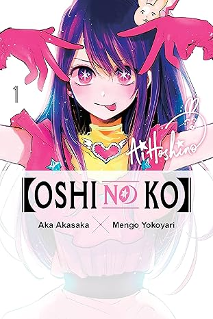

sinopse
O obstetra-ginecologista Gorou Amamiya tem a tarefa de ajudar a trazer de volta os filhos de Ai Hoshino, uma famosa idol pop que ela admira, sem que o público saiba. No entanto, na noite do nascimento de Ai, Gorou é morto pelo fã de Ai e reencarna como Aquamarine Hoshino, filho de Ai. retém as memórias da vida passada.
Informações
- Nome: 【Oshi no Ko】
- Nome alternativo: 【推しの子】
- Tipo: Mangá
- Autor: Aka Akasaka
- Volumes: 16
- Status: Completo
- Demográfico: Seinen
- Gêneros: Reencarnação,Psicológico,Romance,Comédia,Drama,Vida escolar,Slice of Life,Sobrenatural,Mistério,Tragédia
- Editora: Weekly Young Jump
- Publicado em: 2020